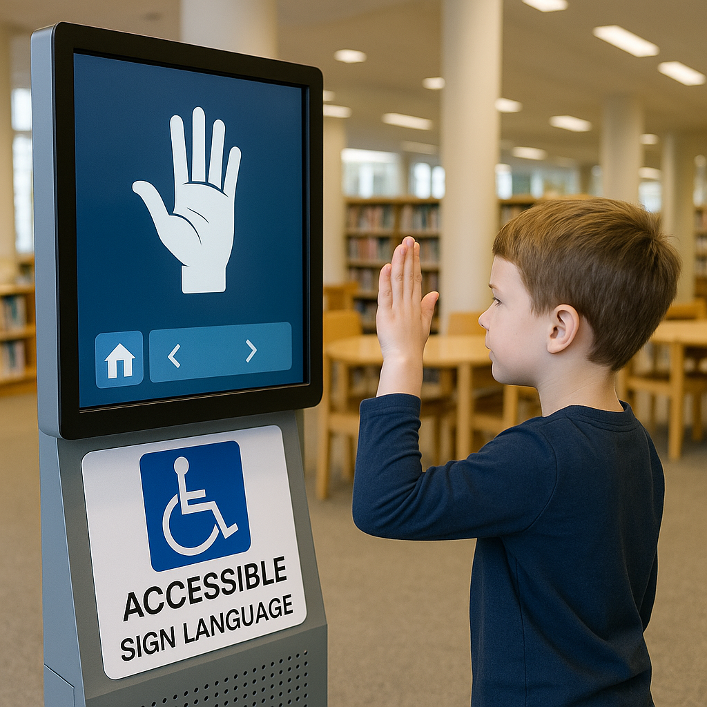
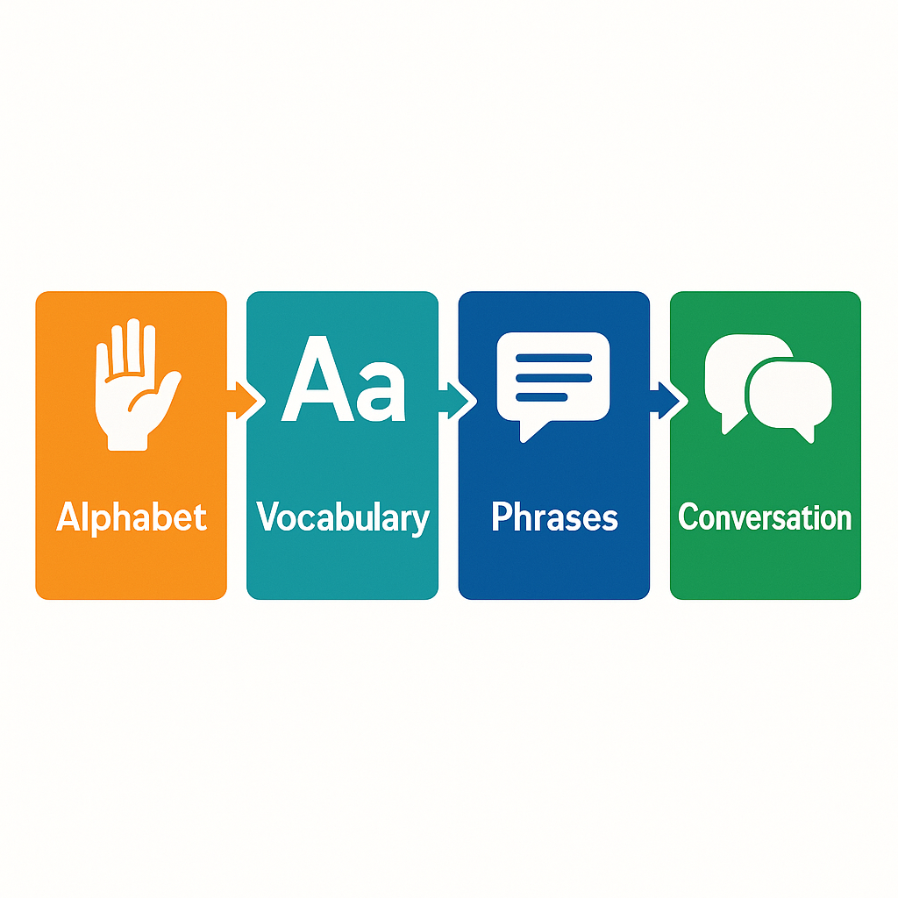
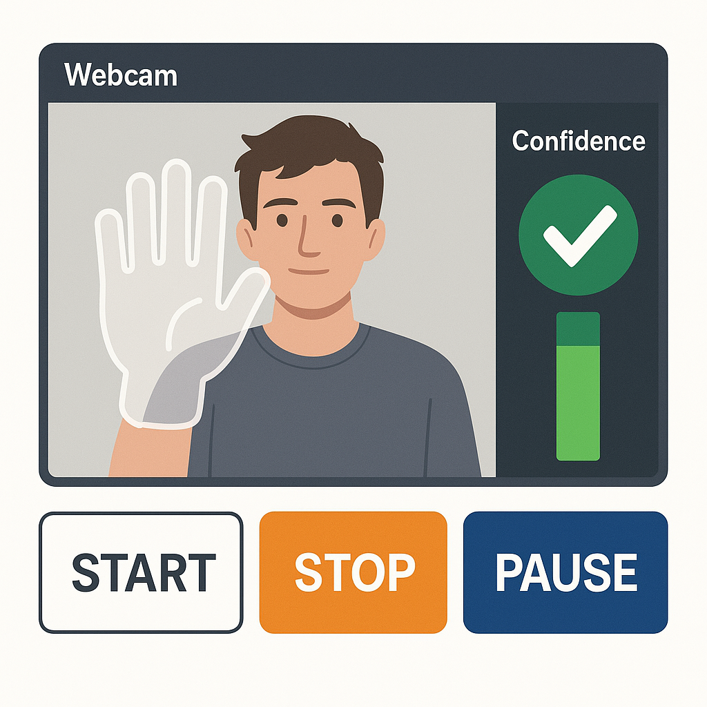
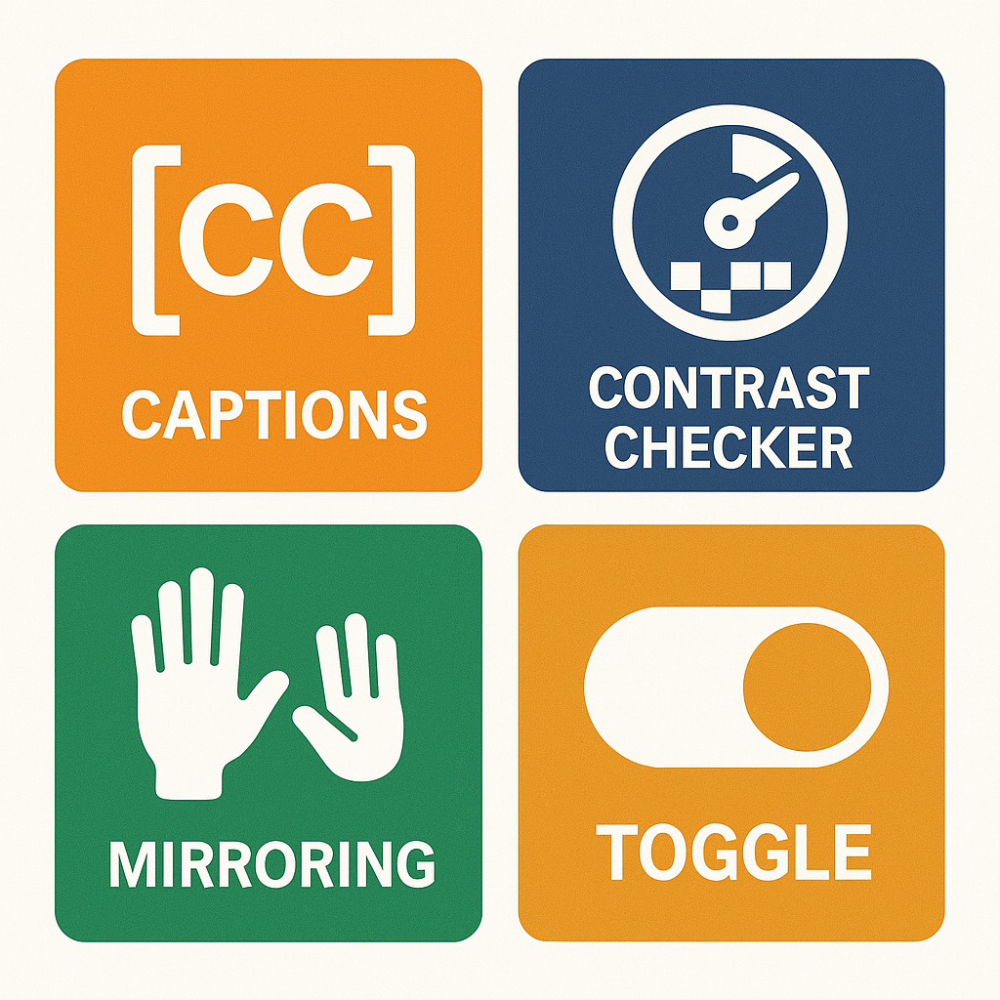
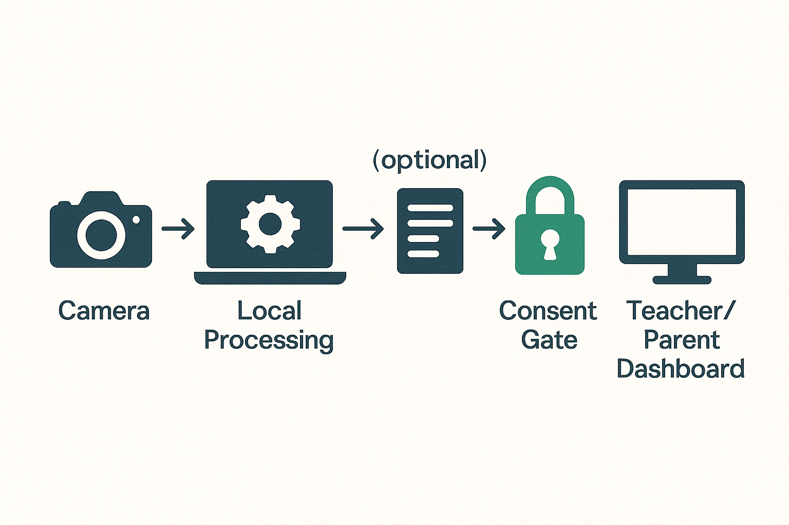

Applications & Real-World Impact
Where and how a CV-based sign-language tool can be deployed responsibly and effectively.
Illustrative, generated image: classroom station with on-screen hand tracking and child-friendly feedback.
Why Applications Matter
Deployment context determines access, equity, privacy, and day-to-day usability. Below are four common scenarios.
Key Use Cases
Classroom Stations (K–6)
Rotations at a shared station; teacher view for progress and targeted practice.
- Low-latency webcam, kid-sized UI
- Small-group prompts and badges
- Teacher dashboard for accuracy & time-on-task
At-Home Learning
Short browser-based sessions on laptops/tablets with simple weekly summaries for caregivers.
- Works offline with caching
- Adaptive difficulty
- 5–10 minute practice sets
Speech & Language Therapy
Fine-grained feedback on finger posture and orientation; exportable session notes.
- Custom sign sets per plan
- Detailed posture hints
- Consistent FPS on managed desktops
Public Kiosks (Libraries/Museums)
Touch-free quick lessons for awareness and inclusion; offline by default for privacy.
- Gesture-only menus
- Looping attract mode with captions
- No data collection by default

Curriculum Mapping & Feedback
Suggested Progression
- Alphabet & numbers (static)
- Core vocabulary (colors, family, classroom)
- Short dynamic phrases
- Conversational prompts

Feedback & Motivation
- On-screen hand outline target
- Friendly hints and ✓/try-again
- Badges for streaks & mastery

Accessibility & Privacy for Children
Inclusive UX Checklist
- Large, high-contrast controls
- Captions + text alternatives
- Icons + short phrases
- Left/right hand toggle
- Hand-in-frame guides & lighting tips

Data Minimization & Consent
- Process locally; don’t store video
- If logging, use anonymized landmarks
- Guardian consent for any data
- Kid-friendly privacy notice

Follow school/district policies and local regulations when working with minors.
Quick Check: Where would you deploy which setup?
-
School iPad carts with limited IT
support:
Correct! Browser-based keeps setup simple and private. -
Museum kiosk with spotty connectivity:
Correct! Edge devices ensure reliability and privacy. -
Therapy clinic needing fine control:
Correct! Native apps support detailed logs and stable FPS.